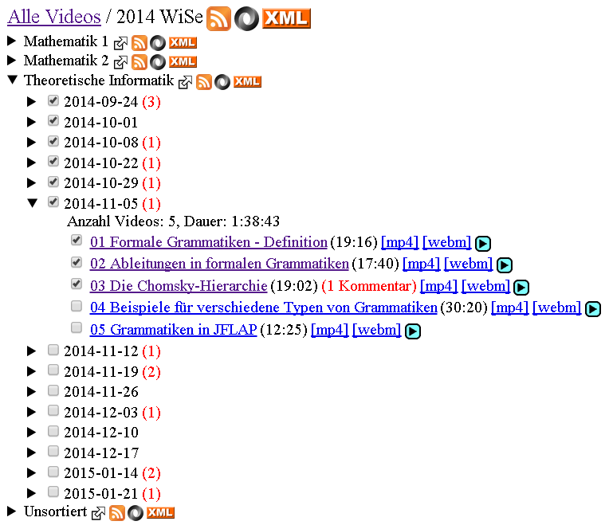

Prof. Dr. Edmund Weitz[1]Mein Dozent in: Mathematik 1, Mathematik 2, Ausgewählte Themen der Medieninformatik und Theoretische Informatik. begann im Wintersemester 2013/14 damit, alle seine Vorlesungen aufzuzeichnen und online zur Verfügung zu stellen.
Weil mir die ViMP-Mediathek zu unübersichtlich ist, sie damals keine Downloadmöglichkeit enthielt und nicht die Features bietet die ich gerne hätte, entwickelte ich an einem Wochenende einen simplen Webcrawler, der automatisiert nach neuen Videos sucht, eine lokale Datenbank pflegt und einen übersichtlichen HTML-Index erstellt. Videos werden nach Vorlesung und Datum gruppiert, und sie können manuell mit einer Checkbox vom Webseitenbesucher markiert werden[2]Die Zustände der Checkboxen, und welche Gliederungspunkte auf oder zugeklappt sind, werden selbstverständlich lokal im Browser gespeichert, nicht über Cookies oder ähnliches übertragen und sind dem Webserver deshalb unbekannt..
Der Media Indexer wurde zwischen dem Wintersemester 2013/14 und dem Sommersemester 2014 gegen ein kleines Honorar um folgende Features erweitert:
- Zusätzlicher Gliederungspunkt: Semester.
- Videodauer und Anzahl der Videos aufsummieren.
- Konfigurationsdatei, um einstellen zu können welche URL die Mediathek hat, wo im HTML-DOM die Informationen liegen und wie sie zu parsen sind.
- Konfigurationsdatei, um die Gliederung beliebig zu ändern, sowie mittels regulärer Ausdrücke die Zugehörigkeit zu den Gliederungspunkten einzustellen.
- Makros für die Konfigurationsdatei, um das Datum und das Semester vom Indexer erkennen zu lassen und in der Gliederung, beliebig verwenden zu können.
- Mehr Kommandozeilenparameter[3]Manuell einzelne Videos löschen/aktualisieren, den Index neu generieren ohne Suche (z.B. bei geänderter Konfigurationsdatei), die Datenbank zurücksetzen und alles erneut erzeugen, usw..
- Die interne Datenbank geändert von CSV zu XML.
- Ausgabe-HTML nicht mehr fest einprogrammiert, sondern über XSLT erzeugen.
- Zusätzliche Ausgabe: RSS-Feeds (ebenfalls über XSLT).
- Unterseiten, für Semester und Vorlesungen, generieren, um nicht immer die riesige Startseite laden zu müssen.
- Multithreading: asynchrone HTTP-Anfragen, Auswertung und Outputgenerierung alles parallelisiert[4]Die Zahlen sind durch die vielen neuen Funktionen nicht direkt vergleichbar, aber die Laufzeit für einen vollständigen Lauf hat sich von 6.3 Minuten bei 461 Videos auf 3.3 Minuten bei 518 Videos verbessert. In der Regel wird kein vollständiger Lauf über alle Seiten und Videos durchgeführt, sondern es werden nur die ersten etwa 1-2 Seiten und neu hinzugekommene Videos aufgerufen..
- Verbesserter Umgang mit, sowie Protokollierung und Benachrichtigung bei, Exceptions
Zwischen dem Sommersemester 2014 und dem Wintersemester 2014/15 wurde der Indexer erneut leicht überarbeitet:
- Bugfix: Betriebssystemabhängige Probleme mit Umlauten in Veranstaltungsnamen[5]Die Namen der Lehrveranstaltungen werden als Ordnernamen verwendet und bilden dadurch die URLs für die Unterseiten. Das Programm ist in jeder Hinsicht explizit auf UTF-8 konfiguriert, aber trotzdem sorgte auf einem von drei Computern das Dateisystem dafür, dass Unterseiten mit Umlauten nicht mehr aktualisiert wurden..
- Manuell implementierter und optimierter Insertionsort-Sortieralgorithmus, welcher entgegen dem Quicksort von Arrays.sort besser für diese Anwendung geeignet ist [6]Die alten Daten sind bereits sortiert und neu hinzukommende Einträge werden meist nur hinten angehängt und untereinander sortiert..
- weitere Ausgabeformate: XML[7]Basierend auf dem XML-Format hat ein Kommilitone ein Python-Skript erstellt, womit automatisch alle Videos einer Lehrveranstaltung heruntergeladen werden können. und JSON (beides über XSLT).
Im Wintersemester 2014/15 wurde der Indexer um einen Kommentarzähler ergänzt, um evtl. wichtige Anmerkungen und Korrekturen hervorzuheben.
Angewendet wird der Media Indexer, einerseits von Prof. Dr. Weitz auf einem geschützten Bereich seiner Webseite, auf den nur Studierende mit Passwort Zugriff haben, und anderseits von mir auf meiner Webseite. Beide Instanzen verwenden dieselbe Software, unterscheiden sich aber etwas in den Konfigurationsdateien[8]Meine Konfiguration akzeptiert prinzipiell auch Videos, die von anderen Dozenten in die Mediathek eingestellt werden, und listet Videos für die keine Regel angelegt wurde als unsortiert..
| Sprachen | Scala, XML, XSLT, HTML, CSS, JavaScript, JSON |
|---|---|
| Technologien | Async Http Client, HtmlCleaner, Xerces, Xalan, EXSLT, Futures, Scala Regex, StringEscapeUtils, ThreadLocal, Java Properties, XPath, XSD, DTD, HTML5, jQuery, RSS |
| IDE | Eclipse mit Scala IDE |
| Beteiligte | 1 |

{kind=link}